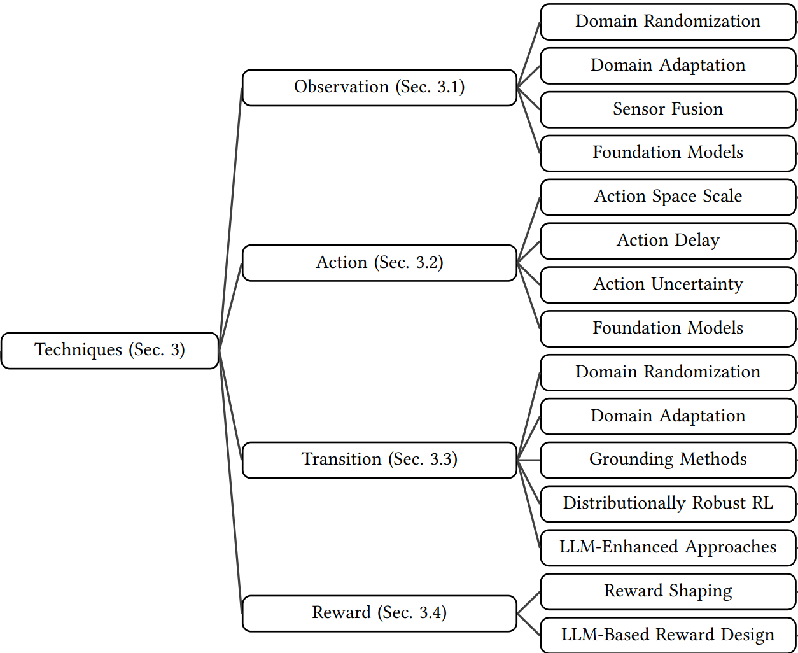
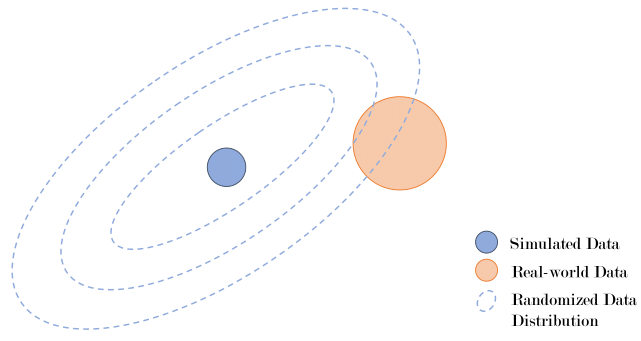
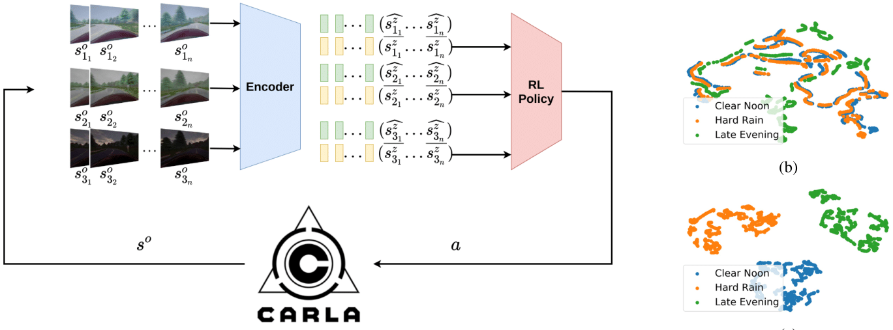
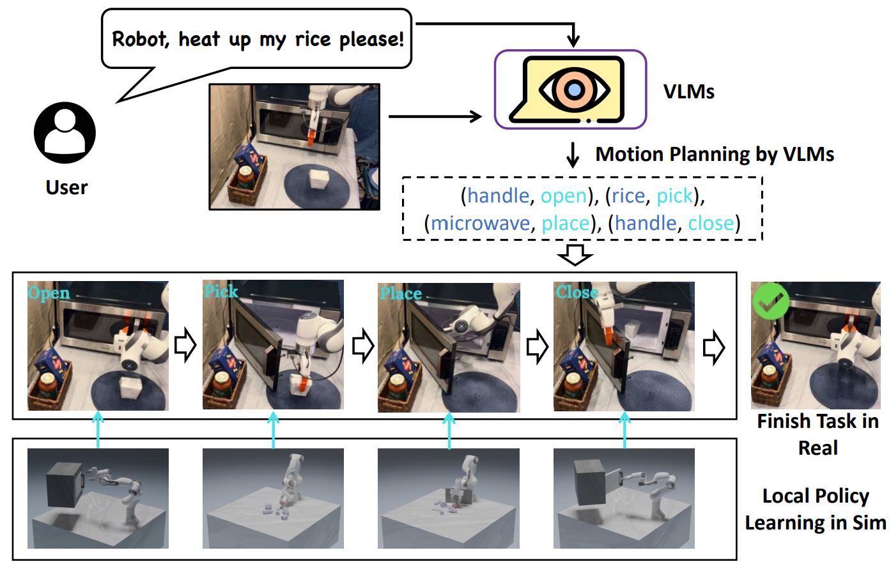

Motivation
Robots act in complex, uncertain worlds. Traditional control relies on hand-designed models. Deep RL offers:
- End-to-end policies from perception → action
- Trial-and-error learning
- Potential for general-purpose autonomy
But transferring from simulation to physical robots exposes the Sim-to-Real gap.
Sim-to-Real Gap
Definition: For a simulator-trained policy $\pi^s$ evaluated by metric $\psi$:
$$G(\pi) := \psi_s(\pi^s) - \psi_r(\pi^s)$$
This gap captures how much performance drops when moving from simulation (s) to reality (r).
Causes:
- Observation gap: noise, partial observations, sensor resolution.
- Action gap: latency, discretization vs continuous control.
- Transition gap: differences in dynamics ($P_s \neq P_r$).
- Reward gap: reward functions may not reflect reality.
➡️ Example: A quadruped robot trained in sim to walk forward may overfit to friction values of the simulator. In reality, even a small mismatch in surface friction can cause slipping and falling.
Simulation vs Reality
Simulation advantages:
- Safe, low-cost, scalable data collection
- Unlimited training samples
- Parallel and fast experiments
Real-world challenges:
- Safety during trials
- High experimental cost
- Slow/limited data collection
- Unexpected or dangerous behaviors
Techniques Overview
- Observation: Domain Randomization (DR), Domain Adaptation (DA), Sensor Fusion, Foundation Models
- Action: Action scaling, delay modeling, uncertainty injection, FM-based planners
- Transition: DR, DA, grounding methods, distributionally robust RL, LLM-augmented approaches
- Reward: Reward shaping, LLM-based design

System Identification
- Build precise models of real system dynamics
- Calibrate simulator with physical measurements
- Improves realism but residual gaps persist
Challenge: even well-calibrated systems drift due to wear, temperature, or sensor misalignment.
➡️ Formula: Suppose simulator uses $m_s$ for mass while reality uses $m_r$. Even small mismatch $(m_s - m_r)$ propagates to torque computation:
$$\tau = I\ddot{\theta} + m g l \sin(\theta)$$
An incorrect $m$ leads to wrong torques, destabilizing control.
Domain Randomization
- Randomize visuals (textures, lighting) and physics (masses, friction, damping)
- Train policies robust across many worlds
Case study: OpenAI’s dexterous hand manipulation → randomizing object mass, surface friction, and textures enabled real-world cube rotation.

⚠️ Excessive randomization destabilizes RL training → use curriculum-based Automatic Domain Randomization (ADR).
Domain Adaptation
- Align features from sim (source) and real (target)
- Approaches:
- Discrepancy-based: align feature distributions (MMD, CORAL)
- Adversarial-based: domain-invariant encoders
- Reconstruction-based: shared latent representations
➡️ Example: Latent Unified State Representation (LUSR) disentangles domain-general and domain-specific features. Policies trained on domain-general embeddings generalize better.

Foundation Models in Sim-to-Real
- Observation: Vision-Language Models extract semantic scene graphs, robust to sim/real mismatch
- Action: LLMs chain low-level skills (grasp, push, open) into long-horizon plans
- Transition: FM-based predictors reduce dynamics mismatch
- Reward: Text-to-reward shaping from LLM prompts
➡️ Formula (reward shaping with LLM):
$$r’(s,a) = r(s,a) + \lambda f_{LLM}(s,a)$$
where $f_{LLM}$ is an auxiliary reward suggested by natural language description.

Future Directions
- Hybrid transfer: DR + DA, adversarial curricula
- Continual and on-robot adaptation
- Distributionally robust RL and uncertainty-aware control
- FM-centric perception, planning, reward pipelines
- New evaluation metrics and safer testbeds
- Formal explanations and safety guarantees
Open challenge: Bridge formal guarantees with scalable practice for robust, safe, FM-augmented RL on real robots.
References
- Zhao, Wenshuai, Jorge Peña Queralta, and Tomi Westerlund. Sim-to-real transfer in deep reinforcement learning for robotics: a survey. IEEE SSCI, 2020. [@survey1]
- Salvato, Erica, Gianfranco Fenu, Eric Medvet, and Felice Andrea Pellegrino. Crossing the reality gap: A survey on sim-to-real transferability of robot controllers in RL. IEEE Access 9 (2021): 153171–153187. [@survey2]
- Da, Longchao, Justin Turnau, Thirulogasankar Pranav Kutralingam, Alvaro Velasquez, Paulo Shakarian, and Hua Wei. A survey of sim-to-real methods in RL: Progress, prospects and challenges with foundation models. arXiv:2502.13187, 2025. [@survey3]